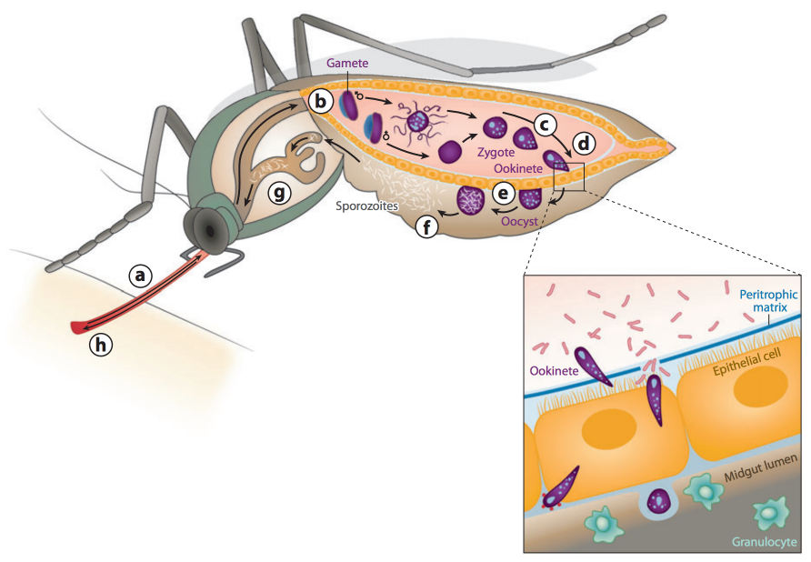
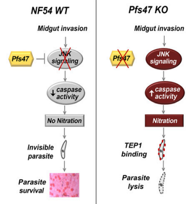
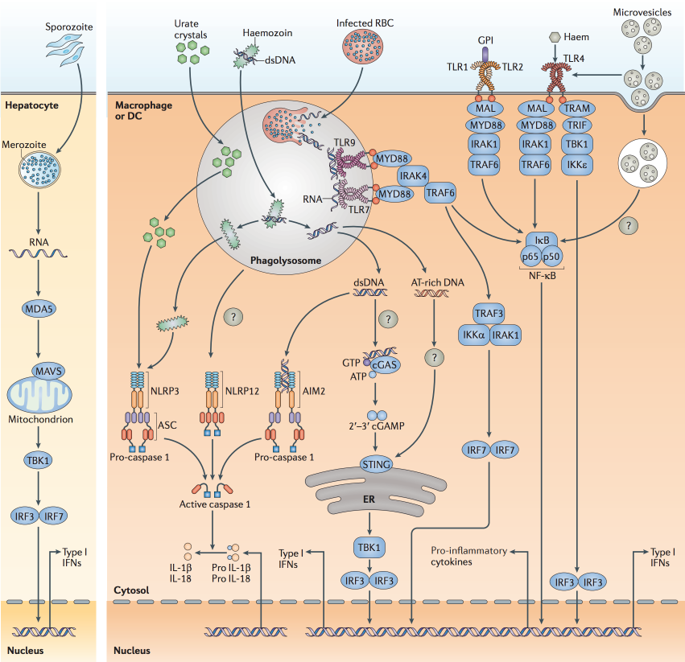

Host—Plasmodium Interactions
Christopher Wetherill
TBMH 5054
Infection of Mosquito Hosts

Mosquito Responses to Infection
- Mosquitoes are infected following ingestion of blood containing Plasmodium gametocytes
- Gametocytes are fertilized in the lumen of the midgut; parasite matures into ookinete
- Mosquito host secreted immune-modulatory peroxidase and dual oxidase
- These compounds prevent activation of gut immune responses
- Facilitate parasite transmission by allowing development without activating NOS expression
Evasion of the Complement-like System
- To fully develop, Plasmodium ookinetes must traverse midgut epithelium undetected
- Must avoid lysis by TEP1 — similar to vertebrate complement factor C3
- Must prevent activation of Toll, Imd, JNK, STAT signaling pathways
The big question: How?
The Pfs47 Gene
- Identified by gene expression analysis
- Codes for members of the 6-cysteine protein family (expressed on gametocyte surface)
- Interacts with TEP1 to evade melanization and lysis
- May suppress midgut epithelial nitration responses?
Inhibition of JNK-mediated Apoptosis
- Subsequent research implicates Pfs47 in silencing of JNK signaling
- Prevents induction of HPX2 and NOX5, subsequent midgur nitration response
- Caspase-3 activity seems to be crucial to nitration, recognition of parasite by TEP1, and parasite lysis
Inhibition of JNK-mediated Apoptosis

Infection of Human Hosts
- Female mosquito injects saliva containing sporozoites
- Sporozoites infect hepatocytes, develop into merozoites
- May also differentiate into hypnozoites (dormant in liver)
- Merozoites are released into blood stream
- Differentiate into gametocytes for mosquito reuptake
Innate Sensing of Malaria

Human Pathophysiology of Malaria

Response to Liver-stage Infection
- Clinically silent stage of infection with little/no innate immune response
- Cellular and molecular basis of this immune evasion remains poorly understood
- May be role for antigenic variance?
- Secondary infections, nutritional status of host have been implicated in immunomodulatory effects
Response to Blood-stage Infection
- Rapid production of pro-inflammatory cytokines
- Likely contributes to early control of parasite replication (e.g., through induction of toxic radicals)
- Cytokine storm can be fatal in minority of individuals (typically malaria-naive)
- Diversity of parasite proteins makes antibody acquisition inefficient
- Evades humoral immunity through T and B cell dysregulation: parasite-specific antibodies are undetectable ~9 mo. post infection
References
Boete, C., Paul, R., & Koella, J. (2004). Direct and indirect immunosuppression by a malaria parasite in its mosquito vector. Proceedings of the Royal Society of London, 271, 1611 - 1615. doi: 10.1098/rspb.2004.2762
Crompton, P., Moebiu, J., Portugal, S., Waisberg, M., Hart, G., Garvner, L., et al. (2014). Malaria immunity in man and mosquito: Insiguts into unsolved mysteries of a deadly infectious disease. Annual Review of Immunology, 32, 157 - 187. doi: 10.1146/annurev-immunol-032713-120220.
Gupta, S. (2005). Parasite immune escape: New views into host—parasite interactions. Current Opinion in Microbiology, 8, 428 - 433. doi: 10.1016/j.mib.2005.06.011
Lambrechts, L., Morlais, I., Awono-Ambene, P., Cohuet, A., Simard, F., Jacques, J., et al. (2007). Effect of infection by Plasmodium falciparum on the melanization immune response of Anopheles gambiae. American Journal of Tropical Medicine and Hygiene, 76, 475 - 480.
Molina-Cruz, A., DeJong, R., Ortega, C., Haile, A., Abban, E., Rodrigues, J., et al. (2012). Some strains of Plasmodium falciparum, a human malaria parasite, evade the complement-like system of Anopheles gambiae mosquitoes. PNAS, 109. doi: 10.1073/pnas.1121183109
Molina-Cruz, A., Garver, L., Alabaster, A., Bangiolo, L., Haile, A., Winikor, J., et al. (2013). The human malaria parasite Pfs47 gene mediates evasion of the mosquito immune system. Science, 340. doi: 10.1126/science.1235264
Ramphul, U., Garver, L., Molina-Cruz, A., Canepa, G., * Barillas-Mury, C. (2014). Plasmodium falciparum evades mosquito immunity by disrupting JNK-mediated apoptosis of invaded midgut cells. PNAS, 112, 1273 - 1280. doi: 10.1073/pnas.1423586112
Vezilier, J., Nicot, A., Gandon, S., & Rivero, A. (2015). Plasmodium infection brings forward mosquito oviposition. Biology Letters, 11, 20140840. doi: 10.1098/rsbl.2014.0840